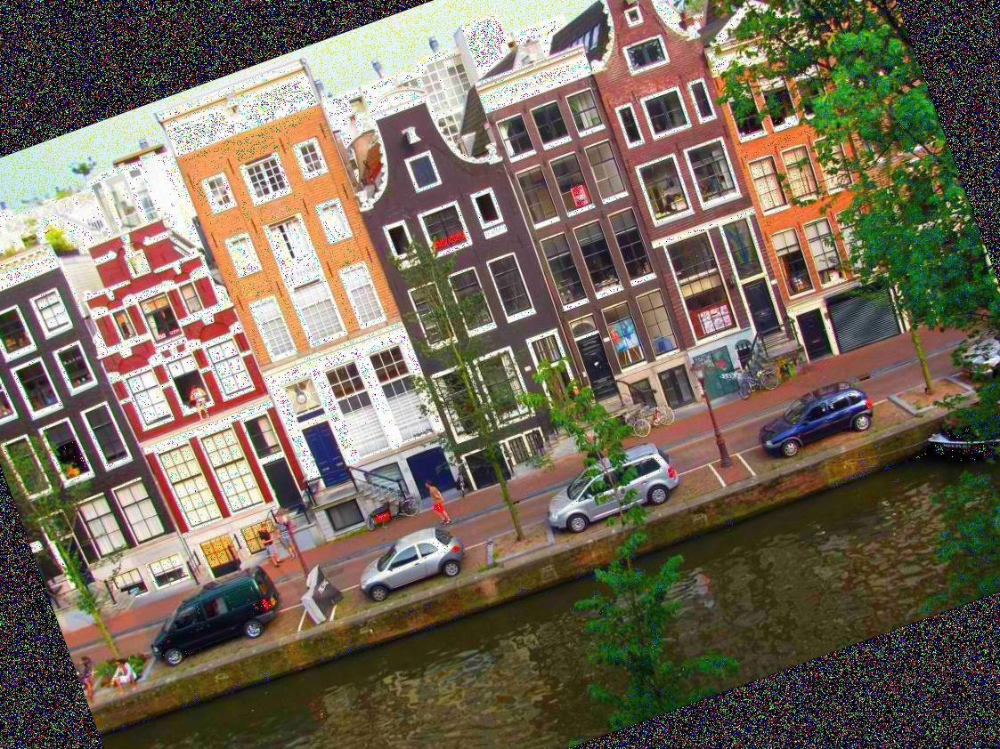
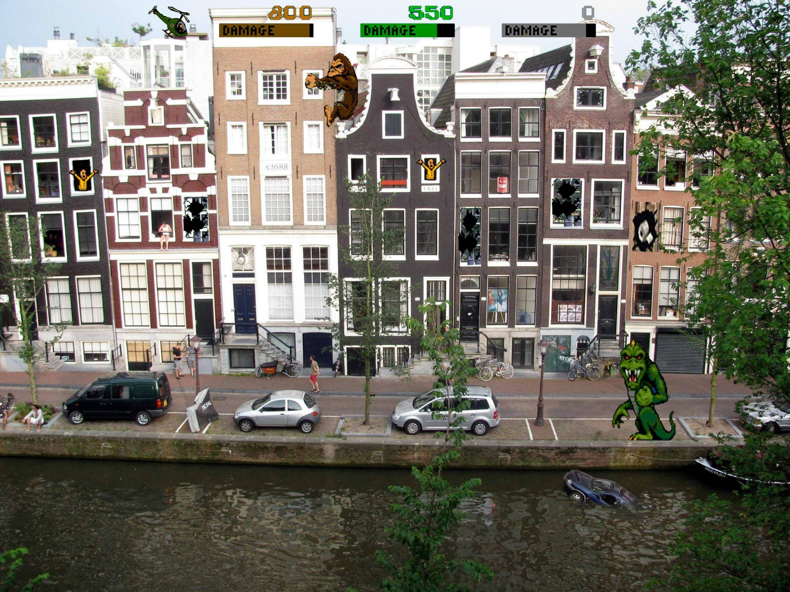

This repo contains the demo code to run our proposed Scene Attention Network (SATNet) model.
Please find the link to code at link_to_code.txt which also stores a pretrained model.
Docker version >= 19.03
Nvidia driver >= 418.39
Nvidia-docker2 >= 2.0.3
A GPU with compute capability >= 3.0 and at least 8GB GPU memory.
First, start the docker container:
docker run --rm -it --runtime=nvidia anonymous0submission/iccv2021:latest bashpython inference.py -i examples/original.jpg -w weight/best.ptThis should output a 64-bit hash code.
python demo.pyThis demo loads an original image examples/original.jpg, a benign-transformed version examples/benign.jpg and a manipulated version examples/manipulated.jpg of that image; then compare the Hamming distance of the original-benign and original-manipulated pairs.
The output should look like this:
Hamming (original.jpg, benign.jpg): 3
Hamming (original.jpg, manipulated.jpg): 22| Original | Benign transform | Manipulated |
|---|---|---|
|  |  |
{kind=link}
{kind=link}
{kind=link}